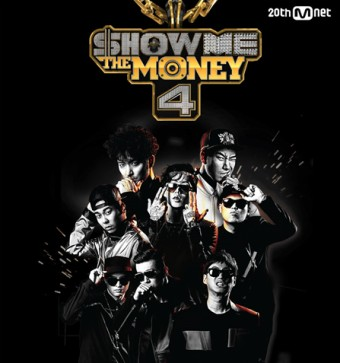

랩 음악, 또는 힙합 음악은 기존의 젊은이들의 음악이었던 락 음악을 대체한 장르이며 팝 음악과 함께 서로 영향을 실시간으로 주고받으며 세계에서 가장 영향력있는 그리고 현재 전 세계에서 젊은 세대에게 가장 인기있는 음악 장르이다
1970년대 미국 뉴욕의 빈민가에 거주하던 흑인들이 형성한 자유와 즉흥성을 중시하는 문화를 총칭한다. 힙합은 재즈와 함께 미국 흑인들이 독자적으로 발생시킨 문화다. 힙합은 ‘엉덩이를 흔든다’는 말에서 유래했다고 전한다. 힙합문화를 구성하는 요소로는 건물 벽에 스프레이 페인트로 그림을 그리는 그래피티(낙서미술), 비트가 빠른 리듬에 맞춰 자신의 생각이나 삶을 이야기하는 랩, 랩에 맞춰 난이도 높은 춤을 추는 브레이크 댄스, 그리고 디제잉 등 네 가지를 꼽는다.
대한민국의 힙합은 1990년대부터 듀스, 서태지와 아이들, 지누션, 김진표 등의 뮤지션을 중심으로 본격적으로 발전하기 시작하여 지금은 서울과 부산, 대구를 중심으로 유명 크루들이 활동하고 에픽하이, 드렁큰 타이거, 키비, 다이나믹 듀오, 배치기 등의 실력자들이 활동한다. 2010년 3월, 에픽하이가 미국 iTunes 차트 1위를 해서 가요계에 한획을 그었고, 에픽하이의 리더 타블로는 다음해 미국 iTunes 차트 1위와 동시에 빌보드 월드 앨범 차트 2위와 5위를 차지하는 기염을 토했다.
./ ./ ./